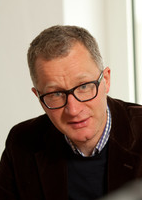

Keynote Speakers
Patricia S. Churchland (Professor of Philosophy, University of California, San Diego, and Salk Institute, San Diego, USA) explores the impact of scientific developments on our understanding of consciousness, the self, free will, decision making, ethics, learning, and religion as well as on more technical questions concerning to what degree the nervous system is hierarchically organized, how the difficult issue of co-ordination and timing is managed by nervous systems, and what are the mechanisms for the perceptual phenomenon of filling-in. The central focus of her research has been the exploration and development of the hypothesis that the mind is the brain. Her first book, Neurophilosophy (1986), argued in detail for a co-evolution of psychology, philosophy and neuroscience to answer questions about how the mind represents, reasons, decides and perceives. A major unanswered question in Neurophilosophy concerned the theoretical apparatus needed to bridge the gap between lower and higher levels of brain organization. She turned to this task in 1987, and began to collaborate with Terry Sejnowski on the book The Computational Brain (MIT 1992). Her most recent book is Braintrust: What Neuroscience Tells us about Morality (Princeton UP 2011). She has been president of the American Philosophical Association (Pacific Division) and the Society for Philosophy and Psychology, and won a MacArthur Prize in 1991. For more information, visit Professor Churchland's webpage.
Kevin D. Hoover (Professor of Economics and Philosophy, Duke University, USA) works on macroeconomics, monetary economics, the history of economics, and the philosophy and methodology of empirical economics. He was educated at the College of William and Mary, the University of St. Andrews, and Balliol and Nuffield Colleges of the University of Oxford. He had worked in the Research Department of the Federal Reserve Bank of San Francisco, and held positions as a Heyworth Prize Research Fellow at Nuffield College, Oxford and lecturer in economics at Lady Margaret Hall, Oxford. He was professor and chair of the Economics Department of the University of California, Davis, before joining Duke University in 2006. His recent work in economics has focused on the application of causal search methodologies for structural vector autoregression, the history of microfoundational programs in macroeconomics, and Roy Harrod's early work on dynamic macroeconomics. In philosophy, he has concentrated on issues related to causality, especially in economics, and on reductionism – the philosophical counterpart to microfoundations. He has conducted studies to investigate the history of twentieth century macroeconomics, the structure of vector auto-regression models, and causality in macroeconomics examined via specification search methodologies. He is the author of more than eighty academic articles and four books, and has edited eight volumes of articles. He is a former fellow of the National Humanities Center and a past recipient of grants from the National Science Foundation and the Trent Foundation. For more information, visit Professor Hoover's webpage.

Andreas Hüttemann (Professor of Theoretical Philosophy, University of Cologne, Germany) works on general philosophy of science, philosophy of physics, philosophy of biology, and the history of philosophy. His current focus lies on questions of reduction and causation. He is a co-director of the Husserl-Archive Cologne, associate editor for Erkenntnis, and coordinator of the DFG-funded research group Causation, Laws, Dispositions, and Explanation at the Interface of Science and Metaphysics. Before taking up the Chair in Theoretical Philosophy at the University of Cologne, he was speaker of the Centre for Philosophy of Science at the University of Münster, associate Professor for Philosophy of Science at the University of Münster, an elected member of the Junge Akademie, Berlin, and received a Heisenberg scholarship. Some of his publications are “Laws and Dispositions” (Philosophy of Science, 1998), What’s wrong with Microphysicalism? (Routledge, 2004), “Explanation, Emergence and Quantum-entanglement” (Philosophy of Science, 2005), and “Aspects of Reductive Explanation in Biological Science: Intrinsicality, Fundamentality, and Temporality” (with Alan Love, British Journal for the Philosophy of Science, 2011). For more information, visit Professor Hüttemann's webpage.
Margaret Morrison (Professor of Philosophy, University of Toronto, Canada) has been a fellow at the Wissenschaftskolleg zu Berlin and also at the Centre for the Philosophy of the Natural and Social Science at the LSE. She has been a member of the Deutsche Akademie der Naturforscher Leopoldina since 2003. Professor Morrison's research is in history and philosophy of science, specifically the issue of unification in science and the role of models in scientific practice. She has also worked on the philosophy of Kant and Descartes. She is the author of “Community and Coexistence: Kant's Third Analogy of Experience”, Kant-Studien (1998) and Unifying Scientific Theories: Physical Concepts and Mathematical Structures, Cambridge University Press (2000), and she has edited Models as Mediators: Essays on the Natural and Social Sciences, Cambridge University Press (1999, with Mary Morgan). More recently she has done work on the development of population genetics and the way mathematical methods influenced the early synthesis of Mendelism and Darwinism (British Journal for the Philosophy of Science 2002, 2006), and on issues relating to reduction and emergence in Physics. For more information, visit Professor Morrison's webpage.